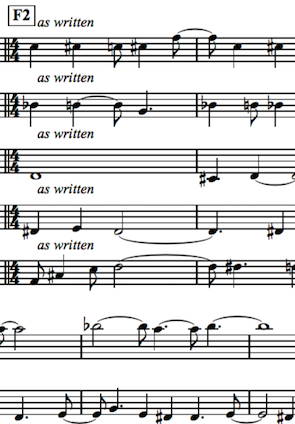
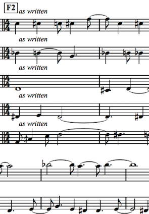

Main elements
- Alternative:
<|>,empty,some,many - Functor:
<$> - Applicative:
pure,<*>,<*,*> - MonadPlus:
mzero,mplus - Other:
sepBy,optional,satisfy
NY Haskell, Oct 2018

 

(rolls up sleeves)
-- | Recognize attribute group
attributeGroup :: XParser m => m AttributeGroup
attributeGroup = do
atEl (xsName "attributeGroup")
AttributeGroup . qn <$> attr (name "name")
<*> attrs <*> documentation
<|> (AttributeGroupRef . Unresolved . qn)
<$> attr (name "ref")
-- | Recognize attributes and attributeGroups
-- (which often come together).
attrs :: XParser m => m Attributes
attrs = Attributes <$>
findChildren (xsName "attribute") attribute <*>
findChildren (xsName "attributeGroup") attributeGroup